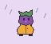

Puddleplum
I drew whiskers on a purple cat and June asked why my eggplant had radio aerials. I gave him a coat. He has since become unbearable about the weather.
The leaf collar takes three greens. The boots are the same two brown pixels flipped over.
Save Puddleplum’s GIF